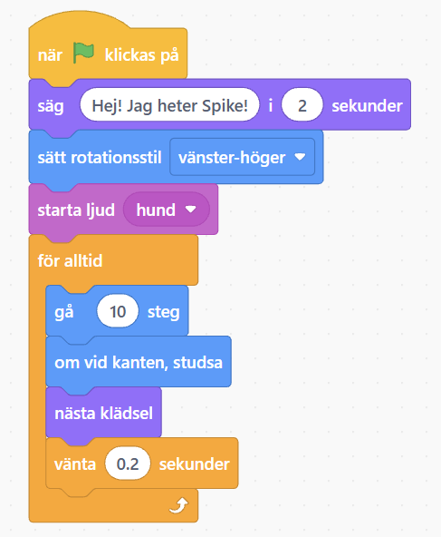

👋 Till dig som vuxen: skapa ett Scratch-konto först
Det tar ungefär 5 minuter och är gratis. Scratch fungerar direkt i webbläsaren på dator, Chromebook eller surfplatta. Inget behöver installeras. Sitt gärna bredvid barnet under film 1.
- Gå till Scratch:
Öppna scratch.mit.edu →
Står sidan på engelska? Scrolla längst ner och välj Svenska i språkrutan. - Klicka på ”Gå med i Scratch” uppe till höger.
- Hitta på ett användarnamn. Använd inte barnets riktiga namn, till exempel KodRobot123.
- Välj ett lösenord och skriv det två gånger. Skriv gärna upp det på en lapp.
- Fyll i land och födelsemånad/år (Sverige).
- Skriv din egen e-postadress som vuxen och skapa kontot.
- Bekräfta kontot: öppna mejlet från Scratch och klicka på knappen som bekräftar e-postadressen. Kolla skräpposten om det inte kommer. Det här behövs för att barnet ska kunna dela sitt spel i film 3.
- Klart! Logga in och starta film 1 nedan.
💡 Dela-knappen fungerar först när e-posten är bekräftad. Fastnar ni? Mejla info@floatingcode.se så hjälper jag er.
🐶 Det här gör du i kursen
I tre filmer gör du ditt alldeles egna första spel i Scratch, där du bygger kod med färgglada block, ungefär som pussel:
- Skaffa konto och hitta runt
- En figur som rör sig och pratar
- Ljud och magiska effekter
- Dela spelet med familjen
📖 Ord som är bra att kunna
- Sprajt
- En figur i ditt spel, till exempel katten eller en hund.
- Scen
- Rutan till höger där ditt spel syns.
- Block
- Pusselbitarna du bygger kod med. Färgen visar vad de gör.
- Gröna flaggan
- Startar spelet. Röda stoppskylten stoppar det.
- Mina saker
- Mappen där alla dina projekt sparas.
Film 1: Konto, språk och en rundtur i Scratch
⭐ Efter filmen kan du
- Ha ett eget Scratch-konto och logga in
- Hitta runt i Scratch
- Döpa och spara ditt första projekt
🧭 Steg för steg
- Hämta en vuxen. Ni behöver en vuxens e-postadress till kontot.
- Gå till scratch.mit.edu. Står allt på engelska? Scrolla längst ner och välj Svenska.
- Klicka på Gå med i Scratch uppe till höger och skapa kontot (se rutan högst upp på sidan).
- Menyn högst upp: Skapa är där du gör egna spel, Utforska är andras spel och Idéer har tips.
- Mappen Mina saker uppe till höger är där allt du gör sparas.
- Klicka på Skapa. Till vänster finns blocken, i mitten kodytan och till höger scenen med gröna flaggan (start) och röda stoppskylten (stopp).
- Katten under scenen är en sprajt, alltså en figur i ditt spel.
- Klicka i namnrutan högst upp och skriv Mitt första spel. Spara: Arkiv → Spara nu.
⏸️ Pausa filmen när du vill och gör samma sak själv.
💡 Tips och om något inte funkar
- Det är okej att pausa filmen när du vill! Gör samma sak som jag och starta sen igen.
- Skriv inte ditt riktiga namn som användarnamn. Hitta på något roligt, till exempel KodRobot123.
- Be din vuxna skriva upp lösenordet på en lapp.
- Ändrades språket i verkstaden? Klicka på den lilla jordgloben uppe till vänster och välj Svenska.
- Scratch sparar ibland av sig själv, men tryck Arkiv → Spara nu själv också.
🎯 Ditt uppdrag
Döp ditt projekt till Mitt första spel och spara det. Hittar du det i Mina saker?
Film 2: Din sprajt rör sig och pratar
⭐ Efter filmen kan du
- Välja en ny sprajt och ta bort katten
- Få sprajten att säga något
- Få sprajten att gå fram och tillbaka
- Starta med gröna flaggan och stoppa med stoppskylten
🧭 Steg för steg
- Öppna Mina saker och klicka på Se inuti vid ditt projekt.
- Klicka på den runda knappen Välj en sprajt under scenen och välj en figur, till exempel en hund.
- Ta bort katten: klicka på kattens ruta och sen på den lilla papperskorgen.
- Vill du ha en bakgrund? Klicka på Välj en bakgrund längst till höger.
- Gul Händelser: dra in när ⚑ klickas på.
- Lila Utseende: lägg säg Hej! i 2 sekunder under. Hör du klicket? Då sitter det fast! Skriv en egen text.
- Blå Rörelse: lägg in sätt rotationsstil vänster-höger.
- Orange Kontroll: lägg in för alltid. Lägg gå 10 steg och om vid kanten, studsa inuti.
- Klicka på gröna flaggan och testa! Spara med Arkiv → Spara nu.
⏸️ Pausa filmen när du vill och gör samma sak själv.
💡 Tips och om något inte funkar
- Går sprajten bara en liten bit? Den behöver för alltid runt gå 10 steg.
- Fastnar den i kanten? Lägg om vid kanten, studsa inuti för alltid.
- Går den upp och ner? Lägg sätt rotationsstil vänster-höger ovanför för alltid.
- Sitter blocket inte fast? Dra det tills du ser en grå skugga och hör ett klick.
🎯 Ditt uppdrag
Välj en egen figur, få den att säga något och gå fram och tillbaka.
🧩 Koden: din sprajt rör sig och pratar
Bygg koden på din sprajt. Block som ligger inuti för alltid upprepas om och om igen.
Blocknamnen kan se lite olika ut beroende på din version av Scratch.
🧩 Bonus: så ser det ut som att den går på riktigt
Lägg till nästa klädsel (lila Utseende) och vänta 0.2 sekunder (orange Kontroll) inuti för alltid. De nya blocken har en vit ram.

Film 3: Ljud, effekter och dela ditt spel
⭐ Efter filmen kan du
- Lägga till ett ljud
- Få sprajten att byta färg när man klickar på den
- Dela spelet så att familjen kan spela
🧭 Steg för steg
- Öppna ditt projekt igen: Mina saker → Se inuti.
- Klicka på din sprajt och sen på fliken Ljud. Klicka på högtalarknappen längst ner till vänster och välj ett ljud, till exempel Boing.
- Gå tillbaka till fliken Kod.
- Gul Händelser: dra in när den här sprajten klickas på på en tom plats.
- Rosa Ljud: lägg starta ljud under och välj ditt ljud med pilen.
- Lila Utseende: lägg ändra färg effekt med 25 under. Klicka på figuren många gånger!
- Lägg ta bort grafiska effekter direkt under gröna flagg-blocket.
- Spara och klicka på Dela högst upp. Skriv hur man spelar i rutan Instruktioner.
⏸️ Pausa filmen när du vill och gör samma sak själv.
💡 Tips och om något inte funkar
- Klicka på pilen i effekt-blocket. Där finns fler effekter, till exempel virvel, fisköga och spöke!
- Vill du spela in ditt eget ljud? Fråga en vuxen först om du får använda mikrofonen.
- Går det inte att klicka på Dela? Din vuxna behöver bekräfta mejlet från Scratch.
- Skriv aldrig ditt riktiga namn, din skola eller var du bor på Scratch. Det är hemligt! 🔒
🎯 Ditt uppdrag
Lägg till ett ljud och en effekt, dela ditt spel och visa det för din familj. Nu är du en riktig spelskapare! 🎉
🧩 Ny kod: när någon klickar på figuren
En egen kod bredvid din andra kod.
🧩 Ändring i flagg-koden
Lägg ta bort grafiska effekter direkt under flagg-blocket. Då blir figuren som vanligt igen varje gång du startar.